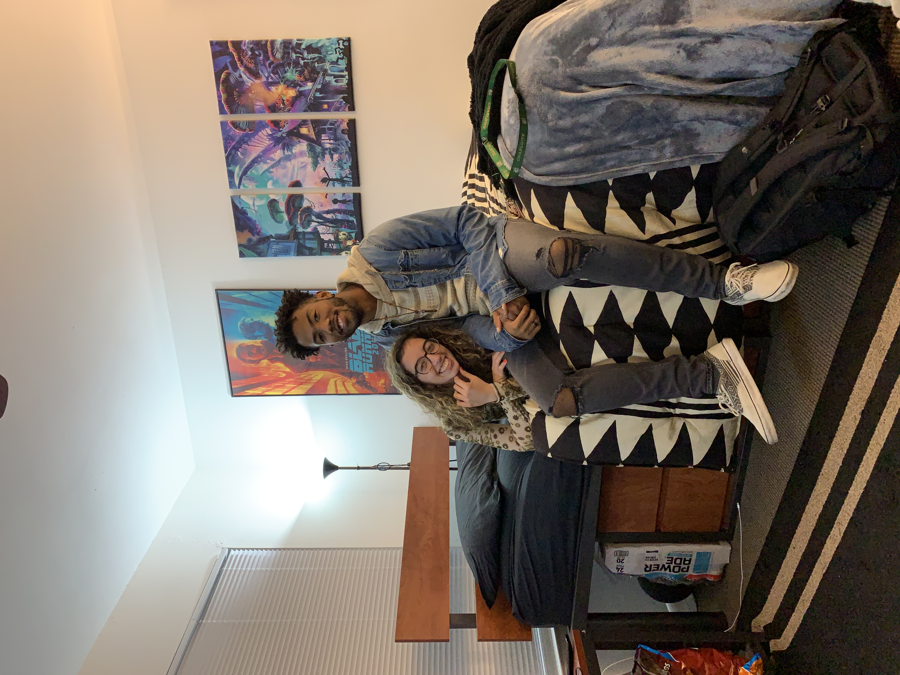
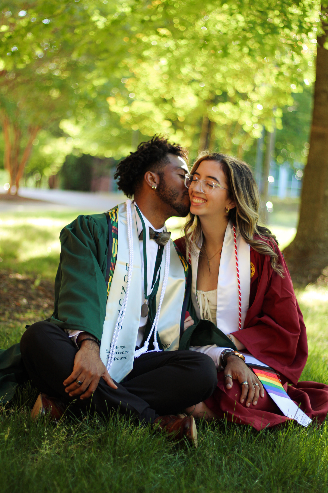
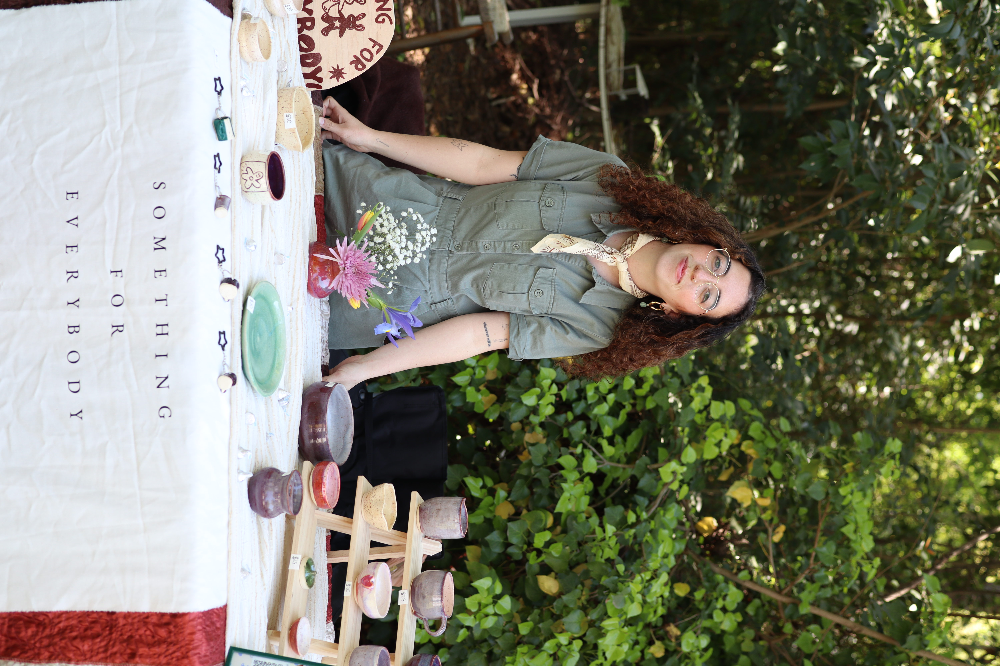

← Back
About Her & Us

It's so beautiful that we were able to create this life together just by matching on Tinder in September 2020. After meeting in our junior year of college in Charlotte, NC,
who would've known that we'd find ourselves in the perfect situation to be loved by each other for the rest of time. On September 30th, 2020 at 35.2271° N, 80.8431° W, Andy's
Drive Thru, you gracisously agreed to give us a chance to prove that we could be something out of this world, and while the journey had its mountains and valleys, I would say
that we have done just that!
From the moment we met, there was an undeniable connection that sparked between us and it has radiated strongly everywhere we traveled. A connection so powerful that it felt like we could
conquer the world together, in addition to tackling any challenge that was thrown our way. Our first date was nothing short of magical, filled with laughter, a little bit of nervousness,
a potential life-threatening bee sting, and an undeniable curiosity to want to learn more about one another.
Little did we know from then, just how lucky we were to have finally found each other!

Before you, I had never known true love... you are the first one. You didn't just say the words, "I love you", but you showed me what those words truly mean. Fortunately our relationship
has allowed us to expierence every major life event together, and I couldn't be more grateful for that. In doing that, it has also shaped our relationship into different fashions
being long distance from Elon to Charlotte, long distance from New York to North Carolina, navigativing moving in together, becoming cat parents, navigating various differing finiancial situations,
getting engaged, and now an upcoming marriage!
Each of these events has tested our relationship in different ways, but through it all, our love has only grown stronger. Additionally, we can attritube that to always remembering to choose us.
No matter what life throws our way, we always make a conscious effort to prioritize our relationship and to support each other through thick and thin. I know there are times that I may fall short
but I will always make the conscious effort to pick myself back up and be the person and partner that I want to be for you and that you asked of me.
Andrea, in you I've found my stink, my best friend, my confidant, my partner in crime, the love of my life, my easiest hello and my hardest "see you later" because it's never a goodbye.

Being able to share this life with you has been the greatest gift I could ever ask for. The second greatest gift is to be alongside you as you carry out all the dreams and goals that
you set out for yourself and excel at them in ways so beautifully. Everyday I find a new reason to be amazed at what an incredible woman you are, how deeply you care and show up for those around you,
and how passionately you pursue your dreams.
"One of a kind" doesn't even begin to scratch the surface of how breathtaking you are. You are truly a once in a lifetime kind of person, and I feel so incredibly lucky and blessed to have you in my life.
This website is just a small token of my love and appreciation for you. It's a place where you can come and revisit all the amazing things you've accomplished, and to remind you of how much you are loved and cherished.
I hope that every time you visit this site, you feel a little bit of the magic and wonder that you bring into my life every day. Thank you for eveything you do in front of and behind the scenes and I can't wait to see what the future holds for us together.
I love you more than words could ever express, Andrea. Here's to a lifetime of love, laughter, and adventure together.
With all my love and more,
Kenny ❤ AKA "Your Stink"